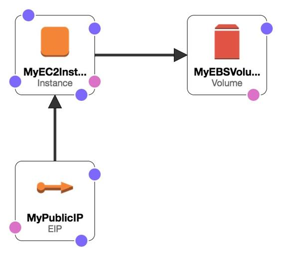

Infrastructure as code
One of the core benefits of the cloud is the capabilities it provides for infrastructure automation and treating everything like code. Though AWS has REST APIs for all the services offers and also supports various Software development kits for various popular programming languages (such as Java, .NET, Python, Android, and iOS), over and above these is one of the most powerful services it has: AWS CloudFormation.
AWS CloudFormation gives developers and systems administrators an easy way to create and manage a collection of related AWS resources, provisioning and updating them in an orderly and predictable fashion. The following is a sample CloudFormation Designer depiction of a simple deployment, which has an EC2 instance with one EBS volume and an Elastic IP address:

Now, when this simple deployment is turned into a YAML CloudFormation template, it looks like the following:
AWSTemplateFormatVersion: 2010-09-09
Resources:
MyEC2Instance:
Type: 'AWS::EC2::Instance'
Properties:
ImageId: ami-2f712546
InstanceType: t2.micro
Volumes:
- VolumeId: !Ref EC2V7IM1
MyPublicIP:
Type: 'AWS::EC2::EIP'
Properties:
InstanceId: !Ref MyEC2Instance
EIPAssociation:
Type: 'AWS::EC2::EIPAssociation'
Properties:
AllocationId: !Ref EC2EIP567DU
InstanceId: !Ref EC2I41BQT
MyEBSVolume:
Type: 'AWS::EC2::Volume'
Properties:
VolumeType: io1
Iops: '200'
DeleteOnTermination: 'false'
VolumeSize: '20'
EC2VA2D4YR:
Type: 'AWS::EC2::VolumeAttachment'
Properties:
VolumeId: !Ref EC2V7IM1
InstanceId: !Ref EC2I41BQT
EC2VA20786:
Type: 'AWS::EC2::VolumeAttachment'
Properties:
InstanceId: !Ref MyEC2Instance
VolumeId: !Ref MyEBSVolume
Now that your core infrastructure components have been turned into a scripted fashion, it's very easy to manage them like any other application code, which can be checked in to a code repository, changes can be tracked at the time of committing, and can be reviewed before deployment to the production environment. This whole concept is known as Infrastructure-as-Code, and helps not just with routine automation but also enables deeper DevOps practices in any environment.
Apart from AWS' services, there are many popular third-party tools such as Chef, Puppet, Ansible, and Terraform, which further help operating infrastructure components in a scripted, code-like manner.